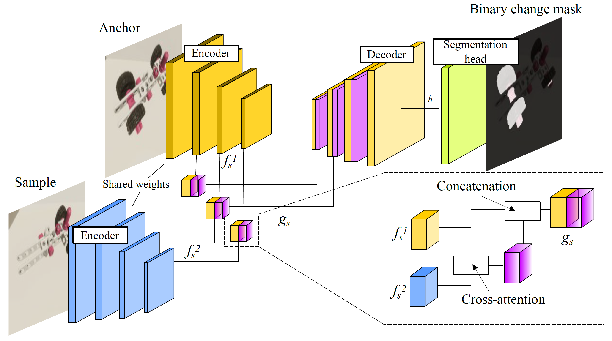
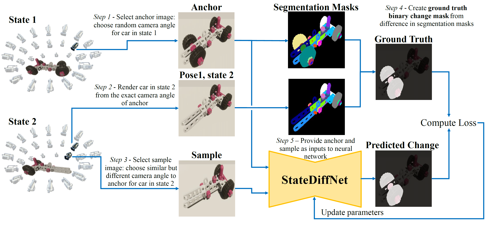

Many works perform some type of assembly state detection or assembly quality inspection, which are typically
performed as a supervised classification or detection problem. Though these approaches show decent
performance at classifying a small number of assembly states, performance on erroneous states is not
investigated. A representation-learning based approach,
rather than a classification based approach, is
demonstrated to be capable of recognizing unseen assembly errors, a fundamental requirement for a viable
system. However, this approach lacks spatial localization of errors, and therefore cannot provide
interpretable feedback. Another type of approach relies on anomaly detection, which requires a model to
learn the typical structures of nominal data, based on a-priori definitions of nominal data. This is not
feasible for industrial procedures, since the possible presence of an error in assembly states depends on
the intended state at that moment of the assembly.
To overcome the fundamental limitations that arise for error localization in the industrial domain, we
propose a methodology that pinpoints the difference between an object in different assembly (including
erroneous) states, using segmentation. Our approach is the first error localization system that can locate
errors on states that were never encountered during training, and on much more complex assembly
configurations than related works. We use more than 10^5 unique state combinations, including states with
very small differences, and test on entirely unseen states.
Given two images of an assembly object, our model segments all meaningful differences in the state that can
be inferred from its view of the object. A core component of the proposed approach is the methodology for
generating and sampling synthetic image pairs, which provides full control over the meaningful change that
the system should detect, as well as the changes that the system should be invariant to, i.e. the expected
variability resulting from aspects such as camera pose, photometry, image distortions, and shadows.
The base architecture is based on [1] and modified to perform segmentation, rather than object detection.

Proposed change segmentation architecture, modified from [1], consisting of a Siamese encoder,
cross-attention based feature-fusion blocks as skip connections in the U-Net-style decoder, and a
two-layer convolutional segmentation head.
[1] Sachdeva, Ragav, and Andrew Zisserman. "The change you want to see." WACV 2023.
Our approach is trained entirely on synthetic data, generated by modifying the Unity Perception package.
The code for this is publicly available via this website. The image pairs are selected as follows:

Overview of the training process. The ground-truth binary change mask of an image pair is created by
taking the difference between the instance segmentation masks of the anchor and the sample image viewed
from the camera angle of the anchor.
While the models are trained exclusively on synthetic data, some configurations are able to perform error-
segmentation on real-world data:
Real-world qualitative results on different assembly errors. The global cross-attention
based model performs best, particularly on missing parts, components, and
mis-orientations. No model is able to reliably detect placement errors (last row).